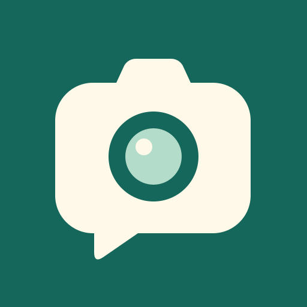

외곽 모서리는 홈 화면 마스킹 미리보기입니다. 원본 파일은 배경을 끝까지 채운 불투명 정사각형입니다.
A · 네이비 카메라
기존 앱의 색을 계승.
촬영 도구라는 인상이 먼저 보입니다.
60px / 36px · 라이트 / 다크 홈 화면

B · 말풍선 렌즈 채택
카메라와 말풍선이 같은 실루엣.
작게 보아도 또렷한 크림·청록 대비.
60px / 36px · 라이트 / 다크 홈 화면
C · 따뜻한 카메라
편안한 크림 바탕, 큰 곡률.
밝은 홈 화면에서는 경계가 약합니다.
60px / 36px · 라이트 / 다크 홈 화면